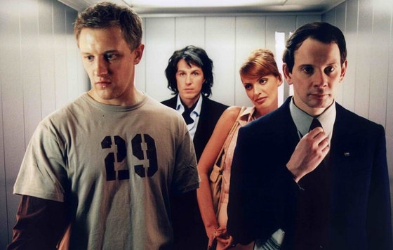
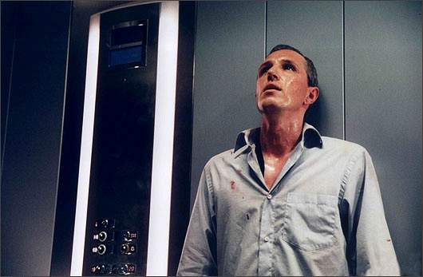

очень интересная задача, алгоритм лифта.
в целом пытался написать давольно таки прозрачную логику. Лифт ездит от нижнего до верхнего этажа
и после спускается вниз, до тех пор пока есть еще пассажиры.
функция возвращает массив stops.
- Лифт всегда едит до последнего этажа или до нулевого этажа
- Загружаются только попутные пассажиры.
- Если лифт дважды подряд делает остановку на одном этаже то записывается в массив только одна остановка
в принципе все остальное согласно условию задачи.

